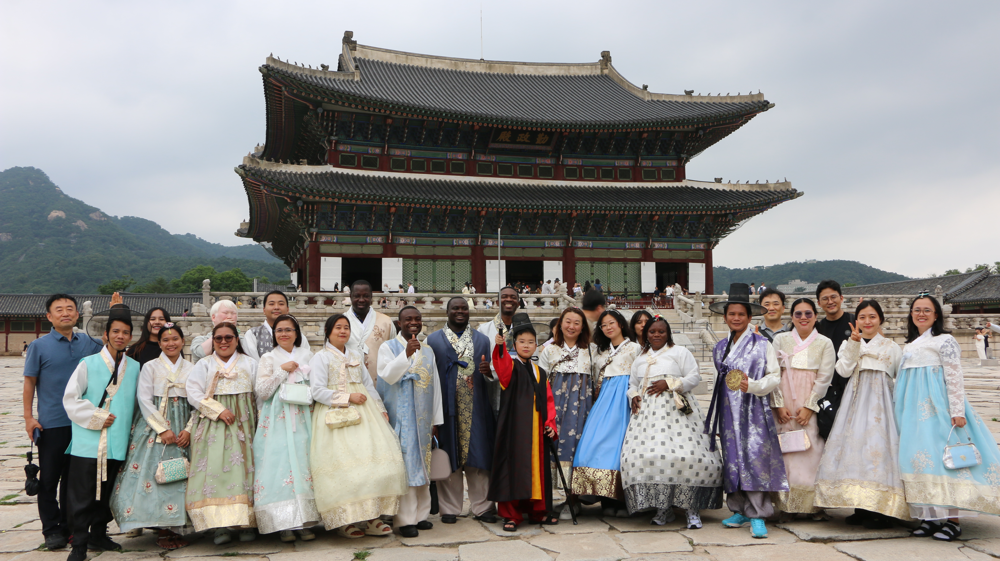

<!doctype html>
<html lang="ko"><meta charset="utf-8"><meta name="viewport" content="width=device-width, initial-scale=1"><title>드림국제교류센터</title>
<style>
*{box-sizing:border-box}body{margin:0;background:#F8F5EE;color:#162D3A;font:16px/1.65 "Noto Sans KR","Malgun Gothic",Arial,sans-serif}a{color:inherit;text-decoration:none}button,input,select{font:inherit}button,a{touch-action:manipulation}button{cursor:pointer}h1,h2,h3,p,figure{margin:0}h1,h2,h3{line-height:1.22;letter-spacing:-.045em}h1{font-size:clamp(2.3rem,4.5vw,4.25rem);max-width:12em}h2{font-size:clamp(1.65rem,3vw,2.8rem)}h3{font-size:1.32rem}p{max-width:62ch}.wrap{width:min(1120px,calc(100% - 48px));margin:auto}.bar{display:flex;align-items:center;justify-content:space-between;gap:18px;flex-wrap:wrap;padding:19px 0}.brand{font-weight:850;display:flex;gap:10px;align-items:center}.logo{display:grid;place-items:center;width:40px;height:40px;background:#176B65;color:#F2D48C;border-radius:50% 50% 12% 50%;font-size:24px}header{border-bottom:1px solid #dcded3}nav{display:flex;gap:10px 17px;flex-wrap:wrap;font-size:.88rem;font-weight:700}nav a[aria-current]{color:#176B65;text-decoration:underline;text-underline-offset:5px}.lang{border:1px solid #b9c9bf;border-radius:24px;background:white;padding:5px 13px;color:#162D3A}.hero{display:grid;grid-template-columns:1.08fr 1fr;align-items:center;gap:46px;padding:68px 0 54px}.hero p{margin-top:18px}.eyebrow{font-size:.82rem;color:#176B65;font-weight:850;letter-spacing:.07em;margin-bottom:12px}.actions{display:flex;gap:10px;flex-wrap:wrap;margin-top:24px}.btn{display:inline-flex;align-items:center;min-height:46px;border:1px solid #176B65;border-radius:8px;padding:9px 17px;font-weight:750;background:#176B65;color:white}.alt{color:#176B65;background:transparent}.photo{background:#dfece4;border-radius:22px;min-height:300px;display:grid;place-items:center;text-align:center;padding:20px;color:#1e564c;border:1px dashed #829f93}.photo b{display:block;font-size:1.25rem}figcaption,small,.muted{color:#465e66;font-size:.9rem}figcaption{padding-top:8px}.band{background:#edf1e9;padding:35px 0 40px}.section{padding:46px 0}.section>p,.band p{margin:12px 0}.cards{display:grid;grid-template-columns:repeat(2,minmax(0,1fr));gap:16px;margin-top:20px}.card{background:#fffdf8;border:1px solid #dadfd3;border-radius:15px;padding:21px}.card p{margin:8px 0}.card a:not(.btn){color:#176B65;font-weight:750;text-decoration:underline;text-underline-offset:4px}.tag{display:inline-block;background:#F2D48C;border-radius:30px;padding:3px 11px;font-size:.8rem;font-weight:750;margin-bottom:8px}dl{display:grid;grid-template-columns:max-content 1fr;gap:6px 20px}dt{font-weight:750}dd{margin:0}label{display:grid;gap:3px;margin-top:12px;font-weight:700}input,select{width:100%;padding:10px;border:1px solid #8aa69b;border-radius:6px;background:white;color:inherit}form{max-width:560px;margin-top:18px}form button{margin-top:15px}footer{border-top:1px solid #dcded3;padding:22px 0;color:#465e66}a:focus-visible,button:focus-visible,input:focus-visible,select:focus-visible{outline:3px solid #176B65;outline-offset:3px}main{min-height:65vh}#status{margin-top:12px}@media(max-width:760px){.wrap{width:calc(100% - 32px)}nav{order:3;width:100%}.hero{grid-template-columns:1fr;gap:25px;padding:33px 0}.photo{min-height:210px}.cards{grid-template-columns:1fr}.section{padding:32px 0}}
.hero-photo{display:block;width:100%;height:auto;border-radius:22px}</style>
<header><div class="wrap bar"><a class="brand" href="#home"><span class="logo" aria-hidden="true">✦</span><span id="brand"></span></a><nav id="nav"></nav><button id="lang" class="lang" type="button"></button></div></header><main id="main"></main><footer><div class="wrap" id="foot"></div></footer>
<script>
const main=document.querySelector('#main');
let english=false;
let draft={name:'',contact:'',program:''}, checked=false;
const t=(ko,en)=>english?en:ko;
const menu={about:['센터 소개','About'],programs:['프로그램','Programs'],chapel:['국제채플','International Chapel'],news:['소식·일정','News & Events'],join:['함께하기','Get Involved'],contact:['문의·오시는 길','Contact & Directions']};
const programs={
 korean:['한국어 회화·글쓰기','Korean Conversation & Writing','일상 대화를 연습하고 짧은 글을 함께 써 봅니다.','Practice everyday conversation and work on short pieces of writing together.'],
 living:['한국 생활 안내','Life in Korea','대전에서의 생활과 학교 적응에 필요한 정보를 나눕니다.','Share practical information about student life and getting settled in Daejeon.'],
 culture:['문화교류','Cultural Exchange','명절과 음식을 나누고 함께 여행하며 서로의 문화를 배웁니다.','Share holiday traditions and food, take trips and learn about each other’s cultures.'],
 campus:['캠퍼스 만남','Campus Meetups','대전 지역 캠퍼스에서 학생들과 만나 교류합니다.','Meet fellow students on campuses around Daejeon.'],
 chapel:['국제채플','International Chapel','예배, 소그룹, 성경공부에 자율적으로 참여할 수 있습니다.','You are welcome to join worship, small groups and Bible study. Participation is optional.']
};
const name=(id)=>t(...programs[id].slice(0,2));
const desc=(id)=>t(...programs[id].slice(2));
const verify=()=>t('확인 필요','To be confirmed');
const openToAll=()=>t('한국어와 문화교류 프로그램은 종교와 관계없이 참여할 수 있습니다.','Korean language and cultural exchange programs are open to people of all faiths and none.');
const first=()=>t('첫 방문 문의','Ask about a first visit');
const note=()=>t('내부 검토용 시안 · 실제 신청과 문의는 연결 준비 중입니다.','Internal preview · Registration and inquiries will be available once connected.');
const button=(url,label,alt=false)=>'<a class="btn '+(alt?'alt':'')+'" href="#'+url+'">'+label+'</a>';
const section=(title,body)=>'<section class="wrap section"><h2>'+title+'</h2>'+body+'</section>';
const photo=(caption)=>'<figure><div class="photo"><div><b>'+t('활동 사진 준비 중','Activity photo pending')+'</b><small>'+t('게시 동의 확인 후 삽입','Photo will be added after publication consent is confirmed')+'</small></div></div><figcaption>'+caption+'</figcaption></figure>';
const facts=(items)=>'<dl>'+items.map(([k,v])=>'<dt>'+k+'</dt><dd>'+v+'</dd>').join('')+'</dl>';
// Set status to open or closed after the event details are verified.
const events={};
function details(id){
 const event=events[id]||{};
 const status=event.status||'pending';
 const label={open:t('모집 중','Open'),closed:t('마감','Closed'),pending:t('일정 미정','Schedule pending')}[status];
 const action=status==='closed'?'<button class="btn alt" disabled>'+label+'</button>':button('visit/'+id,status==='open'?t('참가 신청','Register'):t('다음 일정 문의','Ask about the next date'));
 return '<p>'+desc(id)+'</p>'+(['korean','culture'].includes(id)?'<p>'+openToAll()+'</p>':'')+
 '<div class="card"><span class="tag">'+label+'</span>'+facts([
 [t('대상','Who can join'),t('대전 지역 국제 유학생','International students in Daejeon')],
 [t('날짜','Date'),event.date?.[+english]||verify()],[t('장소','Venue'),event.venue?.[+english]||verify()],
 [t('진행 언어','Language'),event.language?.[+english]||verify()],[t('비용','Cost'),event.cost?.[+english]||verify()],
 [t('모집 상태','Registration'),label]])+'<div class="actions">'+action+'</div></div>';
}
const aboutItems=[["국제채플","International Chapel","예배·소그룹·성경공부에 자율적으로 참여할 수 있습니다.","Worship, small groups and Bible study are optional.","chapel","채플 안내","Explore the chapel"],["이사회","Board of Directors","2026년 4월 이사회 모임 기록을 확인할 수 있습니다. 이사진과 운영 정보는 확인 중입니다.","See the April 2026 board meeting album. Board membership and operating details are pending.","","",""],["매칭 프로그램","Matching Program","유학생과 한국어 대화 파트너를 연결하는 프로그램입니다. 모집 일정과 운영 방식은 확인 중입니다.","Connect with a Korean conversation partner. Recruitment dates and matching details are pending.","visit/matching","매칭 문의","Ask about matching"],["후원하기","Support Us","센터 활동을 지원하고 싶으시면 후원 문의를 이용해 주세요. 공식 후원 방법은 확인 중입니다.","Use the inquiry form to ask about supporting the center. Official donation details are pending.","visit/support","후원 문의","Ask about donations"],["해외교류(의료·선교)","International Exchange (Healthcare & Missions)","의료와 선교 분야의 해외 교류를 소개합니다.","Explore international exchange in healthcare and missions.","exchange","해외교류(의료·선교)","International Exchange (Healthcare & Missions)"]];
const aboutAlbums=[["2025 국제채플","2025 International Chapel","PTeKMvXY-gmBngxjdtN1rXtOyGY-lTcPys42s"],["2026년 4월 이사회 모임","April 2026 Board Meeting","PyJKHqD3hTF6kO58rU6ZJ6AuUpkAw8b8ifH0A"],["선교편지용 사진","Mission Newsletter Photos","N9M75ig_j3dOiZHBMAm7a770e7Pc7VmhnBZhY"],["2024년 유학생 사역","2024 International Student Ministry","Mx7e14f4XLWrC4sFsb8x4HRacuUGj8xiuez2k"]];

function albumLink(index){
 const [ko,en,id]=aboutAlbums[index];
 return '<p><a target="_blank" rel="noopener noreferrer" href="https://photos.google.com/album/AF1Qip'+id+'">'+t(ko,en)+' ↗</a></p>';
}
function aboutCards(){
 return '<div class="cards">'+aboutItems.map(([ko,en,copyKo,copyEn,route,labelKo,labelEn],index)=>'<article class="card"><h3>'+t(ko,en)+'</h3><p>'+t(copyKo,copyEn)+'</p>'+(index<2?albumLink(index):'')+(route?button(route,t(labelKo,labelEn),true):'')+'</article>').join('')+'</div><div class="card" style="margin-top:16px"><h3>'+t('활동 사진 앨범','Activity photo albums')+'</h3><p>'+t('앨범에서 활동 기록을 더 볼 수 있습니다.','Browse more activity photos in the albums.')+'</p>'+albumLink(2)+albumLink(3)+'</div>';
}
function homeLinks(){
 return section(t('센터에서 만나는 사람들','Find your community'),'<div class="cards">'+[
 ['programs',t('한국어와 문화교류','Korean language & cultural exchange'),openToAll()],
 ['chapel',name('chapel'),desc('chapel')],
 ['exchange',t('해외교류(의료·선교)','International Exchange (Healthcare & Missions)'),t('의료와 선교 분야의 해외 교류를 살펴보세요.','Explore exchange in healthcare and missions.')],
 ['join',t(...menu.join),t('봉사, 교회·대학 협력, 후원 방법을 알아보세요.','Explore volunteering, partnerships and ways to support the center.')]
 ].map(([route,title,copy])=>'<article class="card"><h3><a href="#'+route+'">'+title+' →</a></h3><p>'+copy+'</p></article>').join('')+'</div>');
}
function upcoming(){
 const scheduled=Object.keys(events).filter(id=>events[id].date);
 return '<section class="band"><div class="wrap"><h2>'+t('다가오는 모임','Upcoming meetups')+'</h2>'+
 (scheduled.length?'<div class="cards">'+scheduled.map(id=>'<article class="card"><h3>'+name(id)+'</h3>'+details(id)+'</article>').join('')+'</div>':
 '<p>'+t('확정된 모임 일정이 준비 중입니다. 관심 있는 프로그램에서 다음 일정을 문의할 수 있습니다.','Confirmed dates are being prepared. Choose a program to ask when it will meet next.')+'</p>'+button('programs',t('프로그램별 일정 보기','Check program dates'),true))+'</div></section>';
}
function form(topic){
 const selected=topic||draft.program;
 const title=topic==='matching'?t('매칭 문의','Ask about matching'):topic==='partner'?t('봉사·협력 문의','Volunteer & partnership inquiry'):topic==='support'?t('후원 문의','Donation inquiry'):events[topic]?.status==='open'?t('참가 신청','Register'):topic&&topic!=='chapel'?t('다음 일정 문의','Ask about the next date'):first();
 return section(title,'<p>'+note()+'</p><form id="visitForm"><label>'+t('이름','Name')+'<input required name="name" autocomplete="name"></label><label>'+t('회신 연락처','Email or phone for a reply')+'<input required name="contact" autocomplete="off"></label><label>'+t('희망 프로그램 또는 문의 유형','Program or inquiry type')+'<select required name="program"><option value="">'+t('선택해 주세요','Please choose')+'</option>'+Object.keys(programs).map(id=>'<option value="'+id+'">'+name(id)+'</option>').join('')+'<option value="matching">'+t('매칭 프로그램','Matching Program')+'</option><option value="partner">'+t('봉사·기관 협력','Volunteering & partnerships')+'</option><option value="support">'+t('후원','Donations')+'</option></select></label><button type="submit" class="btn">'+t('입력 확인','Check form')+'</button><p id="status" role="status"></p></form>');
}
function render(){
 let [page,id]=location.hash.slice(1).split('/');
 if(!['home','detail','visit','exchange',...Object.keys(menu)].includes(page)||page==='detail'&&!Object.hasOwn(programs,id))page='home';
 document.documentElement.lang=t('ko','en');
 document.title=t('드림국제교류센터','Dream International Exchange Center · Working name');
 document.querySelector('#brand').textContent=t('드림국제교류센터','Dream International Exchange Center');
 document.querySelector('#foot').textContent=note()+t(' 공식 영문명 확인 필요.',' Official English name to be confirmed.');
 document.querySelector('#lang').textContent=t('English','한국어');
 document.querySelector('#nav').setAttribute('aria-label',t('주 메뉴','Main navigation'));
 document.querySelector('#nav').innerHTML=Object.entries(menu).map(([key,labels])=>'<a href="#'+key+'" '+((page===key||page==='exchange'&&key==='about'||page==='detail'&&key==='programs')?'aria-current="page"':'')+'>'+t(...labels)+'</a>').join('');
 const pages={
 exchange:()=>section(t('해외교류(의료·선교)','International Exchange (Healthcare & Missions)'),'<div class="cards"><article class="card"><h3>'+t('의료 교류','Healthcare exchange')+'</h3><p>'+t('해외 의료기관 및 봉사팀과의 교류 분야입니다.','Exchange with healthcare organizations and volunteer teams overseas.')+'</p></article><article class="card"><h3>'+t('선교 교류','Mission exchange')+'</h3><p>'+t('해외 교회와 선교단체와의 교류 분야입니다.','Exchange with churches and mission organizations overseas.')+'</p></article></div><p>'+t('협력기관, 일정, 참여 방법은 확인 중입니다.','Partners, dates and participation details are being confirmed.')+'</p>'+button('visit/partner',t('협력 문의','Ask about partnerships'),true)),
 home:()=>'<section class="wrap hero"><div><p class="eyebrow">'+t('대전 국제 유학생 커뮤니티','For international students in Daejeon')+'</p><h1>'+t('대전에서 만나는 친구, 함께 배우는 한국 생활','Make friends and make yourself at home in Daejeon.')+'</h1><p>'+t('한국어를 연습하고, 문화를 나누고, 새로운 친구를 만나세요. 드림국제교류센터가 여러분을 환영합니다.','Practice Korean, share your culture and meet new friends. Welcome to Dream International Exchange Center.')+'</p><div class="actions">'+button('programs',t('프로그램 보기','Explore programs'))+button('visit',first(),true)+'</div></div>'+'<figure><figcaption>'+t('경복궁 한복 체험 · 한국문화 교류','Korean cultural exchange · Hanbok outing at Gyeongbokgung Palace')+'</figcaption></figure>'+'</section>'+upcoming()+homeLinks(),
 about:()=>section(t(...menu.about),'<p class="tag">'+t('모든 곳에서 모든 곳으로','From everywhere to everywhere')+'</p><p>'+t('2020년 대전 지역 캠퍼스에서 시작한 국제 유학생 사역의 경험을 바탕으로, 유학생과 지역사회가 만나는 자리를 마련합니다. 드림국제교류센터는 기독교 신앙에 뿌리를 둔 공동체입니다.','Our work began with international student ministry on Daejeon campuses in 2020. Today we bring students and the local community together. Our community is rooted in the Christian faith.')+'</p>'+aboutCards()),
 programs:()=>section(t(...menu.programs),'<p>'+openToAll()+'</p><div class="cards">'+Object.keys(programs).filter(id=>id!=='chapel').map(id=>'<article class="card"><h3>'+name(id)+'</h3><p>'+desc(id)+'</p><a href="#detail/'+id+'">'+t('일정·장소 확인','View dates & venue')+' →</a></article>').join('')+'</div>'),
 detail:()=>section(name(id),details(id)),
 chapel:()=>section(name('chapel'),details('chapel')+'<p>'+t('첫 방문 전 문의 양식에서 국제채플을 선택하면 진행 언어와 모임 장소를 확인하는 흐름을 살펴볼 수 있습니다.','For a first visit, select International Chapel in the inquiry form to see how to ask about the meeting language and venue.')+'</p>'+button('visit/chapel',first(),true)),
 news:()=>upcoming()+section(t('활동 사진과 후기','Photos & reflections'),photo(t('활동 기록 예정 · 대전 문화교류 모임','Planned activity photo · Cultural exchange meetup in Daejeon'))+'<p>'+t('참여자 후기 준비 중','Participant reflections pending')+'</p>'),
 join:()=>section(t(...menu.join),'<div class="cards">'+[
 [t('한국어 대화 파트너','Korean conversation partner'),t('유학생과 일상 주제로 대화하며 한국어 연습을 돕습니다.','Help students practice Korean through everyday conversations.')],
 [t('행사 봉사','Event volunteering'),t('문화교류 모임 준비와 현장 안내를 돕습니다.','Help prepare cultural events and welcome participants.')],
 [t('교회·대학 협력','Church & university partnerships'),t('유학생 소개, 공간 지원, 공동 행사 등을 협의할 수 있습니다.','Discuss student referrals, meeting spaces or joint events.')],
 [t('후원 문의','Donation inquiries'),t('공식 후원 안내 확인 필요','Official donation details to be confirmed')]].map(([label,copy],i)=>'<article class="card"><h3>'+label+'</h3><p>'+copy+'</p>'+button('visit/'+(i===3?'support':'partner'),t('문의 양식 보기','View inquiry form'),true)+'</article>').join('')+'</div>'),
 contact:()=>section(t(...menu.contact),'<div class="card">'+facts([[t('공식 연락처','Official contact'),verify()],[t('주소','Address'),verify()],[t('교통편','Transit directions'),verify()],[t('운영 시간','Opening hours'),verify()]])+'</div><div class="actions">'+button('visit',first())+'</div>'),
 visit:()=>form(id)
 };
 main.innerHTML=pages[page]();
 const f=document.querySelector('#visitForm');
 if(f){
  f.elements.name.value=draft.name;f.elements.contact.value=draft.contact;
  f.elements.program.value=id||draft.program;
  f.oninput=()=>{if(f.elements.program.value!==id&&id){history.replaceState(null,'','#visit');id=undefined}({name:draft.name,contact:draft.contact,program:draft.program}=Object.fromEntries(new FormData(f)));checked=false;document.querySelector('#status').textContent='';};
  const feedback=()=>document.querySelector('#status').textContent=t('필수 항목 입력을 확인했습니다. 시안에서는 입력 내용이 전송되지 않습니다.','Required fields are complete. This preview does not send your information.');
  f.onsubmit=e=>{e.preventDefault();checked=true;feedback()};
  if(checked)feedback();
 }
}
document.querySelector('#lang').onclick=()=>{english=!english;render()};
window.addEventListener('hashchange',()=>{checked=false;render();window.scrollTo(0,0);main.tabIndex=-1;main.focus({preventScroll:true})});
render();
</script></html>
